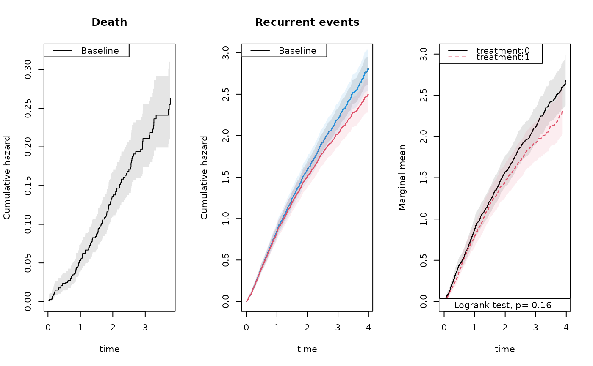

Marginal mean estimation for recurrent events with a terminal event
Source:R/recurrent.marginal.R
recurrent_marginal.RdEstimates the marginal mean number of recurrent events over time in the presence of a competing terminal event (e.g. death), using the nonparametric estimator of Ghosh and Lin (2000). Two proportional hazards models are fitted internally—one for the recurrent event rate and one for the terminal event—and combined to form the estimator $$\mu(t) = \int_0^t S(u-)\,dR(u),$$ where \(S(u)\) is the marginal survival probability at the baseline covariate level and \(dR(u)\) is the baseline recurrent event rate among survivors. Robust (sandwich) standard errors are computed via the influence-function approach of Ghosh and Lin (2000).
Usage
recurrent_marginal(formula, data, cause = 1, ..., death.code = 2, test = FALSE)
recurrentMarginal(formula, data, ...)Arguments
- formula
A formula with an
Eventresponse on the left-hand side, specifying entry time, exit time, and event status. The right-hand side may includecluster()to identify subjects andstrata()for a stratified analysis. Acluster()term is required.- data
A data frame containing all variables in
formula.- cause
Integer code(s) for the recurrent event of interest. Default is
1.- ...
Further arguments passed to
phreg.- death.code
Integer code(s) for the terminal event. Default is
2.- test
Logical. If
TRUE, a logrank-type test comparing strata is computed and stored as an attribute of the result. Default isFALSE.
Value
An object of class "recurrent" with the following components:
- mu
Estimated marginal mean \(\mu(t)\) at each jump time.
- se.mu
Robust standard error of
mu.- times
Jump times at which estimates are computed.
- St
Marginal survival estimate \(S(t)\) at each jump time.
- cumhaz
Two-column matrix of
(time, mu), suitable for plotting.- se.cumhaz
Two-column matrix of
(time, se.mu).
The object carries three attributes: "logrank" (the test result when
test = TRUE, otherwise NULL), "cause", and
"death.code".
Details
Jump times must be unique within each stratum. If ties are present, use
tie_breaker to resolve them before calling this function.
References
Cook, R. J. and Lawless, J. F. (1997). Marginal analysis of recurrent events and a terminating event. Statistics in Medicine, 16, 911–924.
Ghosh, D. and Lin, D. Y. (2000). Nonparametric analysis of recurrent events and death. Biometrics, 56, 554–562.
Examples
data(hfactioncpx12)
hf <- hfactioncpx12
hf$x <- as.numeric(hf$treatment)
## Fit nonparametric baseline models for recurrent events and death
xr <- phreg(Surv(entry, time, status == 1) ~ cluster(id), data = hf)
dr <- phreg(Surv(entry, time, status == 2) ~ cluster(id), data = hf)
par(mfrow = c(1, 3))
plot(dr, se = TRUE); title(main = "Death")
plot(xr, se = TRUE); title(main = "Recurrent events")
## Compare naive and robust standard errors for the recurrent event rate
rxr <- robust_phreg(xr, fixbeta = 1)
plot(rxr, se = TRUE, robust = TRUE, add = TRUE, col = 4)
## Marginal mean via formula interface
outN <- recurrent_marginal(Event(entry, time, status) ~ cluster(id),
data = hf, cause = 1, death.code = 2)
plot(outN, se = TRUE, col = 2, add = TRUE)
summary(outN, times = 1:5)
#> [[1]]
#> new.time mean se CI-2.5% CI-97.5% strata
#> 608 1 0.8282358 0.04844543 0.7385251 0.928844 0
#> 1053 2 1.5139493 0.07039884 1.3820710 1.658412 0
#> 1282 3 2.0244982 0.08351867 1.8672476 2.194992 0
#> 1392 4 2.5004732 0.10843166 2.2967320 2.722288 0
#> 1392.1 5 2.5004732 0.10843166 2.2967320 2.722288 0
#>
## Stratified analysis with logrank test
out <- recurrent_marginal(Event(entry, time, status) ~ strata(treatment) + cluster(id),
data = hf, cause = 1, death.code = 2, test = TRUE)
plot(out, se = TRUE, ylab = "Marginal mean", col = 1:2)

attr(out, "logrank")
#> Estimate Std.Err 2.5% 97.5% P-value
#> p1 37.98 27.04 -15.01 90.97 0.1601
#> ────────────────────────────────────────────────────────────
#> Null Hypothesis:
#> [p1] = 0
#>
#> chisq = 1.9737, df = 1, p-value = 0.1601
summary(out, times = 1:5)
#> [[1]]
#> new.time mean se CI-2.5% CI-97.5% strata
#> 325 1 0.8737156 0.06783343 0.7503858 1.017315 0
#> 555 2 1.5718563 0.09572955 1.3949953 1.771140 0
#> 682 3 2.1184963 0.11385721 1.9066915 2.353829 0
#> 748 4 2.6815219 0.15451005 2.3951619 3.002118 0
#> 748.1 5 2.6815219 0.15451005 2.3951619 3.002118 0
#>
#> [[2]]
#> new.time mean se CI-2.5% CI-97.5% strata
#> 284 1 0.7815557 0.06908585 0.6572305 0.9293989 1
#> 499 2 1.4534055 0.10315606 1.2646561 1.6703258 1
#> 601 3 1.9240624 0.12165771 1.6998008 2.1779119 1
#> 645 4 2.3134997 0.14963892 2.0380418 2.6261880 1
#> 645.1 5 2.3134997 0.14963892 2.0380418 2.6261880 1
#>
## Influence-function (iid) decomposition at a fixed time point
head(iid(outN, time = 3))
#> strata0
#> 1 2.547554e-04
#> 2 6.537407e-04
#> 3 4.236127e-03
#> 4 -1.378931e-03
#> 5 -5.105272e-05
#> 6 -3.424693e-03